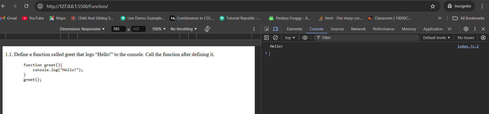
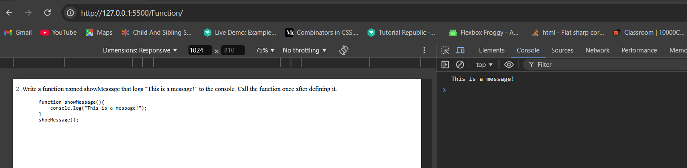
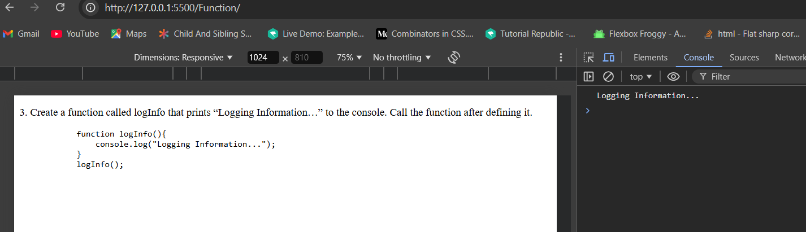
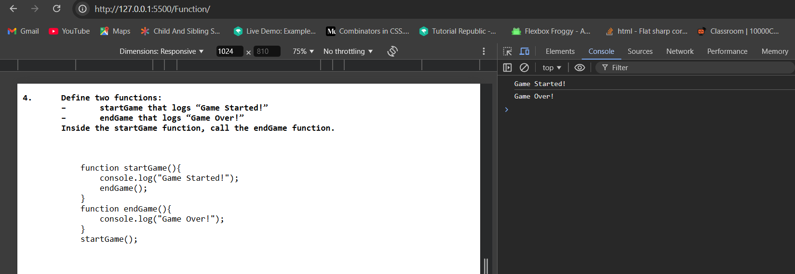
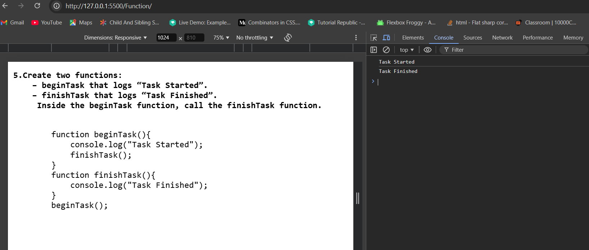

1. Define a function called greet that logs “Hello!” to the console. Call the function after defining it.
function greet(){
console.log("Hello!");
}
greet();

2. Write a function named showMessage that logs “This is a message!” to the console. Call the function once after defining it.
function showMessage(){
console.log("This is a message!");
}
shoeMessage();

3. Create a function called logInfo that prints “Logging Information…” to the console. Call the function after defining it.
function logInfo(){
console.log("Logging Information...");
}
logInfo();

4. Define two functions:
– startGame that logs “Game Started!”
– endGame that logs “Game Over!”
Inside the startGame function, call the endGame function.
function startGame(){
console.log("Game Started!");
endGame();
}
function endGame(){
console.log("Game Over!");
}
startGame();

5.Create two functions:
– beginTask that logs “Task Started”.
– finishTask that logs “Task Finished”.
Inside the beginTask function, call the finishTask function.
function beginTask(){
console.log("Task Started");
finishTask();
}
function finishTask(){
console.log("Task Finished");
}
beginTask();
